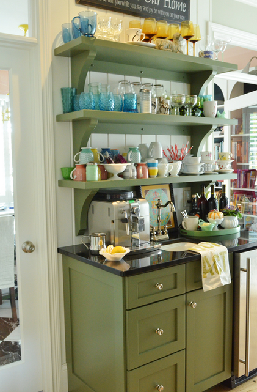

.png)
.PNG)
.PNG)
.PNG)
.PNG)
.PNG)
.JPG)
.JPG)
.PNG)
.PNG)


I am up to my eyeballs in work, but I did want to give you a quick taste of some eye candy. (I have to take a break from school work sometime!) Green is the perfect refresher. So in honor of Sunday’s upcoming St. Patrick’s Day I thought a few green interiors would be fun to see.
Let’s start in the kitchen.life in grace via emilyaclark.blogspot.com
Here is another view of that same pretty kitchen. cultivate.com
cultivate.com
I really think this green floor makes this room the epitome of a spring time space.
And here is the dining room that belongs to that kitchen. coastalliving.com
coastalliving.com
That’s plenty of kitchen eye candy for now. Here are a few bathroom pictures for you.
The next two photographs are of Bill Ingram’s bathroom.

And now just some totally random green eye candy:
a sink for potting your plants….
a chest painted a bright shade of green…
a cute green cottage… southwestart.com
southwestart.com
and some pretty green paper… If we had married in March, this would have surely been part of our stationery suite. Isn’t it cute?
Okay, I said this was going to be a quick post. Got to get back to work…Don’t forget about the Easter basket giveaway from my last post.

Just leave a comment on this post and/or the previous one, and you will be entered for the drawing on Sunday night. All your favorite Easter candies in the comments last time made me super hungry! I really wanted one of those Reese’s peanut butter eggs. 🙂 yum… Okay today’s question for you is:
Do you use much green in your home?
Getting back to work. Looking forward to hearing from you!


.PNG)
Love green…I have it in most of my rooms. Thanks for the eye candy and the giveaway!
Kelly, I love the open cabinets to display the plates and bowls. I never would have thought to use green, but it’s really pretty! I also thought the green floor looked awesome! It’s funny how a little bit of paint can change the entire look of a place. I went and saw the new Nicholas Sparks’ movie Safe Haven, and the main character paints her kitchen floor yellow. The only green we have to decorate with is plants, but I feel inspired to hang a green mirror – the one you showed us looks great.
Who would’ve thunk it that a green kitchen floor would make a kitchen so versatile? I’m sitting here staring at the picture and adding orange accessories and pumpkins for Autumn.then changing over to my beloved reds for Winter,then back to the way it is now for Spring&Summer.I’ve even changed the art in my mind and set their table for Easter,Thanksgiving and Christmas! Kudos to them for their great choice of flooring!It fits their kitchen perfectly.
I have pretty green bathmats that match the leaves of the pink roses on my shower curtain and a quilt on a bed that has a lot of green thruout but no green walls.
About the only greenis use in my home comes from green plants. However, I love aqua and turquoise.
I love green and I have tons of it in my home! I really like all of the green home stuff in this post. It is so refreshing and bright. Thanks for the eye candy, Kelly!
My colonial house is still green. 🙂 It was the color of dirt when we bought it. We don’t plan on changing anytime soon. We love it.
I just finished painting all of my green walls.:D Pale yellow. I’ve had green for too long. While I do love it, it was time for a brighter change. The pictures are all beautiful. I just found your blog and know I will enjoy coming back.
Another inspiring post. I love green almost as much as I love blue but my favorite way to bring green into my home is to add plants. Thanks for the inspiration, Donna
I white washed my stucco house with white cement last summer (oh yes I did!) and painted all of the trim white simply because I couldn’t commit to a trim color at the time. I finally choose a beautiful shade of green to use and I’m very happy with that choice but I think I’m just going to put it on the window frames and leave the eaves etc. white. Can’t wait to get it on there this coming summer!
Inside, I’m leaning towards using green painted cabinets in the kitchen (farm style). I am also going to use a very pale shade of green in my sewing room to make my rose decor pop.
Happy St. Pat’s!
You had me with the green! THEN YOU MENTIONED REESE’S PEANUT BUTTER EGGS 🙂 Yes we do have green in the house. It’s my favorite color 🙂
Beautiful pictures, beautiful color!
Happy Friday, Kelly! My favorite color….green! My master bedroom is a pretty green and I have it sprinkled here and there all over my home. Kinda like you and red! I really want to paint my kitchen cabinents, but I’m chicken. I think it would update my kitchen which is something it needs! Maybe I’ll get the guts up some day. By then, it will be time for a total remodel. Anyways, all that to say, I love green! There are so many different variations of that color these days that are so beautiful too. Thanks for all those beautiful pics. I enjoyed looking at them so much.
When we moved to lovely Hammond Louisiana in the wake of Hurricane Katrina, I wanted our new home to be serene and green. All the stress of losing our former home and living in multiple cities would fade away surrounded by soft green walls, cozy fabrics, and the zen-like calm of our new very Southern home. I told our devcorator I wanted nothing to jar the eye. With 5 shades of green paint now on our walls, guests always comment on how peaceful they feel in our home.
I’ve loved green for a long time – about 5 years ago I got brave and experimented with Benjamin Moore’s “Dill Pickle” in our laundry room (a good place to try out a new color, BTW). I loved it so much that our 2 story entry and hallway are now Dill Pickle as well. I never tire of it and it looks great with black accents (and my deep red dining room wallpaper with hidden monkeys on it!) I’m starting spring break today – hope yours is coming up, us teachers (and kids) need a break!!
I love the house colors from lifeingrace. I’m thinking of repainting this year, so I may try some of her shades of green. I love green! I had white walls with hunter green moldings when I was in high school. I was very preppy: )
I have green in every room as a complement to either pale aqua or other pastels.
Thanks for the tour.
I really don’t– but you have given me something to think about! My guesthouse is painted in Martha Stewart’s sea glass green with nautical theme and I love it!! And my daughter’s house has a lot of John Deere green for accents to go with her yellow brick road kitchen!! I told you she loved anything Oz!! PS: oh yes, we have ALREADY been to see the new movie–loved it!!:)
Green is my favorite color, so thumbs-up! Mary at Little Red House is hosting a “green” party today, celebrating St. Patrick’s Day.
Oh how I love green. Wonderful photos you’ve posted. I couldn’t
help but think your green playroom baskets would have fit
perfectly into this post. 🙂
You got me to thinking…as much as I love green I only have
it in sparse accents around my house. Strange! Linens and
vintage books mostly.
Btw, the give away basket is wonderful! The book sounds like a fun read. My kiddos would love that cute little Jack stuffed doggie. We have one named Kirby.
It’s funny that you posted about green! I was just thinking of painting my green dresser black. I think you changed my mind!
uggghhh! I am such a “non-commit” kinda gal when it comes to color. I am in love with the simplicity of browns, creams and whites with black thrown in too. I always WANT to put color in somehow and I do try it sometimes (Christmas) but am always way too excited to go back to my “calming” palette. I have green typically only in real plants, but I love how the green looks in your post!
I love green…when I saw the green wicker in a showroom, I had to have it for my sunroom…that was 8 years ago and still loving it!!…Thanks for all of the great green!!
I actually don’t have very much green at all. In the main bathroom the shower curtain is mostly green, but that’s pretty much all. I love the first pic in this post with the green shelves, black door and all the white dishes. Love.
I love green! My kitchen and master bath are both green. Thanks for a chance to win!
I miss my old vintage home and it’s green cupboards! I’m using green just as an accent color in our Florida winter condo…it reflects with the outdoor tropical foliage. Love green!!!
Loving all the examples you shared and I’m with Cheryl, there is much that is green in my home. A soft green bedroom, downstairs lavette (BM’s Hint of Mint), a long living room wall – just to name a few. Green can be such a soothing color and a wonderful backdrop for all the other colors in your decor’s palette.
Green is like one of my neutrals, it is on my dining room walls, husbands office walls and our futon room walls. Each is a different shade.
Green is my favorite color and I use it everywhere! 🙂
Green happens to be my favorite color to wear, and this spread of green was a feast 🙂 having said that, I really don’t have much green in the decor…hmm, should I change that?!
Love the greens. I am in love with Annie Sloan’s Antibes green. Have a chair with her name on it that I just can’t wait to paint! It will add just the right accent green to my entry.
I adore green! My main upstairs bathroom is painted in BM Soft Fern green and I also use touches of green in the bedrooms. Now that the floors are being transformed from blue carpet to neutral wood, tile and carpet I will be able to use even more green 🙂
I also love green. Matter of fact, it is my favorite color … all shades, even “Kelly green.” 🙂 Thanks for another chance at your great giveaway.
Diane
Hi Kelly! I continue to enjoy each and every post!!!! Especially was digging this one as it makes me love green all over again:) Such beautiful photos…loved, loved, loved the little green cottage.
Speaking of green, I am seeing little areas of green grass poking through my still-snow-covered Michigan yard. Yay! Spring is on its way.
Sheila
Do I use green in our home, oh yes….I love green. We have one of the bathrooms done is green with white fixtures and it’s lovely.I also have many green plants all over the house. I love using real plants. They can be a lot of work but so much nicer. I would love to win the basket, it’s so darling and the candy…yum, yum.
I adore the color green!!! Thanks for the wonderful giveaway!!
Green and red are my favorite colors. I have lots of both in my house and collect green jadeite dishes. I also like to wear green is different shades. Emerald green is my favorite!
We have a log home with flat wood walls on the inside. I have actually been trying my best to convince my husband to let me stain the walls of our side entry a pretty shade of green to break up some of the wood tone. I think I’m starting to wear him down! ha!!
Love green! Major color in our home. Thank you for the “eye candy”.
well, you know after reading my recent post how i’m loving green too! you’ve rounded up some gorgeous inspiration pics…and that cottage? i die!
thanks for coming up for air and sharing some pretty pictures!
Funny, no, we don’t seem to have used green here much. Though the living/dining room is a dusty teal–a lot of blue in it so doesn’t really qualify as the green you’re talking about. I said funny because growing up, a mid-tone green much like those you’ve shown was in heavy use at my grandmother’s and at my home. We’ve come to call it W.A.S.P. green, as it was tasteful and restful and blended well with books and Oriental rugs. Blue, mostly quiet shades of blue, is the most used color in our home now. Next color for the family room is going to be a silvery gray–perhaps leaning toward blue. My daughter thinks we’re a broken record with all the blues–but it, too, is restful and evokes nature for me.
Lovely post of easy-to-live-in spaces, and I especially like the green cabinets with blue counter top.
I love the calm palette that green provides in decorating. I’ve got a green accent wall in my Italian-villa inspired kitchen. It’s got taupe walls and gorgeous Mexian tile on the counters and backsplash — the green wall makes it all pop. I was so pleased with it in the kitchen, I carried it over to the laundry room. I never get tired of my green walls. Love the black door and ladder in the top post. I’ve always wondered about actually living with those gorgeous open shelves with china and glassware — don’t they get dusty?? I agree with the lady who said that she loves to wake up to find a new blog post from Talk of the House waiting for her!!
Hey, Kelly. As always, I love your blog. My family room and master bath are silver sage by Restoration Hardware. I think it is a soothing green color and love it. However, I have a small guest bedroom that is painted hunter green. That was a mistake but I live with it by using bright white, blue, and yellow beachy accents.
Green is my favorite color and use it often in decorating. My anniversary is on March 17th…and when we got married I was so busy finishing up college and wedding planning that I didn’t even know it was St. Patrick’s Day! Wish I had of, I would have definitely used green!
Those Green Scenes are so bright and refreshing Kelly….and your name is even a shade of green!!:) I have Nantucket Gray (Benj Moore) in one of my bedrooms and it is more of a sagey green. It is one of my favorite colors!
I probably use green more at Christmas with red, but was actually thinking of using it on the kitchen walls with our remodel. However, I decided to go with a more neutral color on all the walls instead. I do like the color very much, as well as blue, as they are both beautiful earth-tone colors. I continue to enjoy reading your blog, Kelly, you always have such great insight and ideas.
After 8 years in the Army, it took me awhile to like green again. These greens are very refreshing. Beautiful!